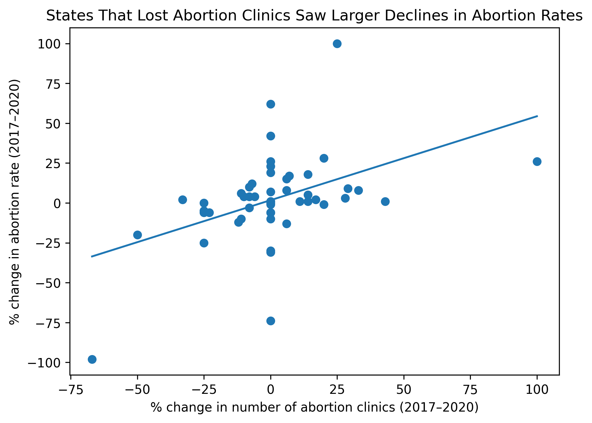

Proposition: Reductions in abortion clinics are associated with lower abortion rates
FOR the Proposition

Design Decisions and Rationale:
- Using percent change from 2017-2020 instead of raw counts
- Deception/Ernest Score: -1
- I encoded both clinic availability and abortion outcomes using percent change over time rather than raw counts. Percent change makes trends comparable across states with very different baseline numbers and visually amplifies declines in states that began with few clinics. This choice strengthens the apparent association between clinic loss and abortion decline, though it can exaggerate the magnitude of change in low-volume states. I considered using absolute counts, but percent change more directly supports the comparative, cross-state argument I wanted to make.
- Using a scatterplot fitted with a linear trend line
- Deception/Ernest Score: -1.5
- I used a scatterplot to show the relationship between clinic change and abortion rate change, and added a linear regression line to summarize the overall pattern. While the trend line is statistically valid, it visually implies a systematic relationship and invites causal interpretation, even though the data are observational. Including the trend line makes the takeaway more immediate and persuasive without introducing an explicit causal claim.
- Red dashed regression line
- Deception/Ernest Score: 0
- The regression line is drawn in red with a dashed pattern to distinguish it from the data points and subtly draw the viewer’s attention. This choice increases the perceptual salience of the trend without using overtly emotive or sensational styling.
- Selectively labeling certain outliers
- Deception/Ernest Score: -1
- Rather than labeling all states, I annotated only those in the top or bottom 5% of both clinic change and abortion rate change. This algorithmic definition of “outlier” provides a defensible rule while ensuring that extreme and rhetorically influential cases are foregrounded. Labeling all states would have cluttered the chart and diluted the narrative, while manual selection would have been more transparently subjective.
- Framing with a title that suggests a causal relationship
- Deception/Ernest Score: -1
- The title, “States That Lost Abortion Clinics Saw Larger Declines in Abortion Rates,” frames the relationship as a patterned outcome following clinic loss. The phrasing implies temporal sequence and association. It doesn't explicitly say there is a causal relationship, but allows for that line of thought, making the visualization persuasive while remaining technically accurate. This framing more clearly communicates the intended stance of the visualization.
AGAINST the Proposition
Design Decisions and Rationale:
- RATIONALE_1
- RATIONALE_2
- RATIONALE_3
Final Reflection
[WRITE FINAL REFLECTION PARAGRAPHS HERE.]